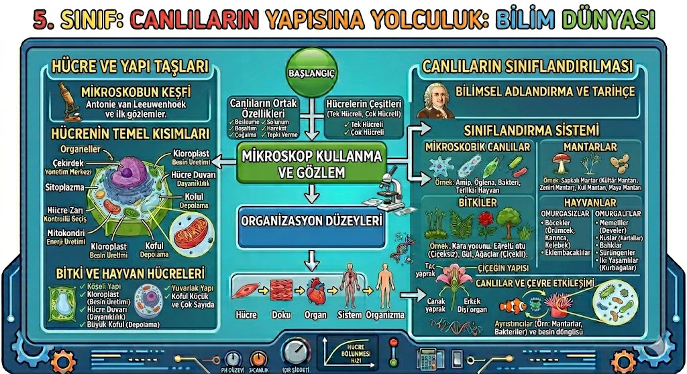
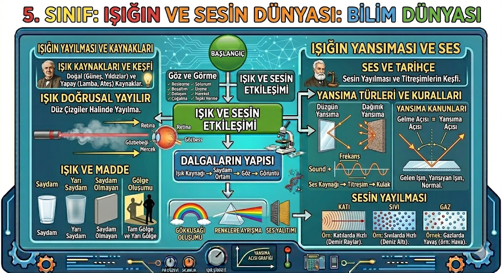
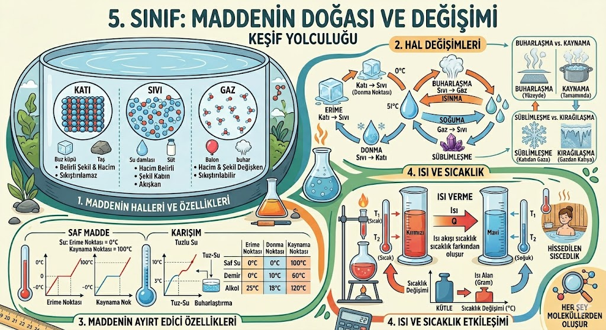
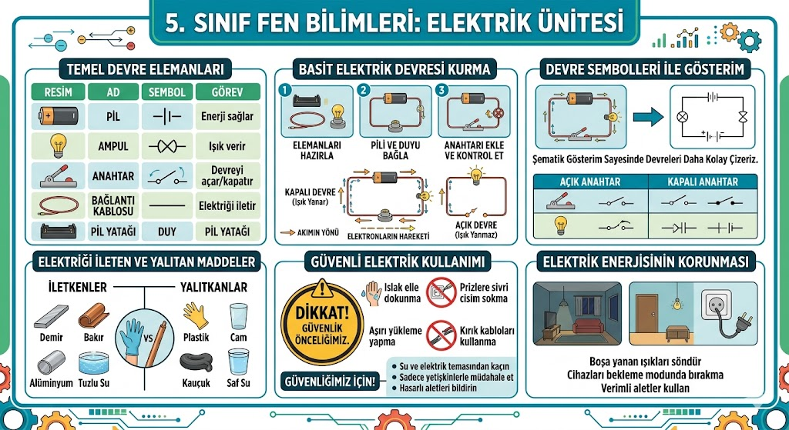
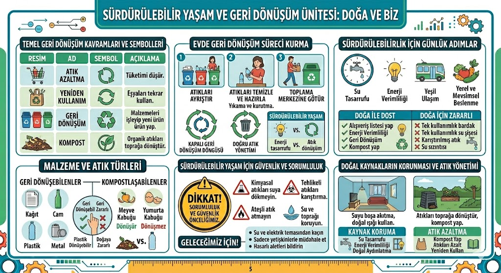

Ay'ın neden hep aynı yüzünü görürüz?
5. Sınıf Fen Bilimleri Üniteleri
Üniteleri açmak için başlıkların üzerine tıklayabilirsin.

Güneş'in Gizemi: Güneş orta büyüklükte bir yıldızdır. Galileo, Güneş lekelerini gözlemleyerek onun döndüğünü kanıtlamıştır.
Ay'ın Coğrafyası: Atmosferi yok denecek kadar azdır, bu yüzden kraterler oluşur ve ayak izleri sonsuza dek kalabilir.

Sınıflandırma: Canlıları mikroskobik canlılar, mantarlar, bitkiler ve hayvanlar olarak 4 gruba ayırıyoruz. Mantarlar bitki değildir, kendi besinlerini üretemezler.

Dinamometre: Kuvveti ölçer. Sürtünme kuvveti ise hareketi zorlaştıran bir etkidir ve pürüzlü yüzeylerde daha fazladır.
🌟 İlginç Fen Bilgileri
Güneş'in Devasalığı: Güneş'in içine yaklaşık 1 milyon 300 bin tane Dünya sığabilir!
Uzayda Ses: Uzay boşluk olduğu için ses yayılmaz. Yani uzayda devasa patlamalar olsa bile hiçbir şey duyamayız.

Hâl Değişimi: Erime, donma, buharlaşma gibi olayları kapsar. Isı enerjidir, sıcaklık ise bu enerjinin bir ölçümüdür.

Işığın Yolu: Işık her yöne doğrusal yayılır. Opak maddeler ışığı geçirmez ve gölge oluşturur.

Biyoçeşitlilik: Ülkemizin zengin canlı türlerini korumalıyız. Çevre kirliliği biyoçeşitliliği tehdit eden en büyük sorundur.

Basit Devreler: Pil, ampul, kablo ve anahtarın sembollerle gösterimini öğreniyoruz. Pil sayısı artarsa ampul daha parlak yanar.